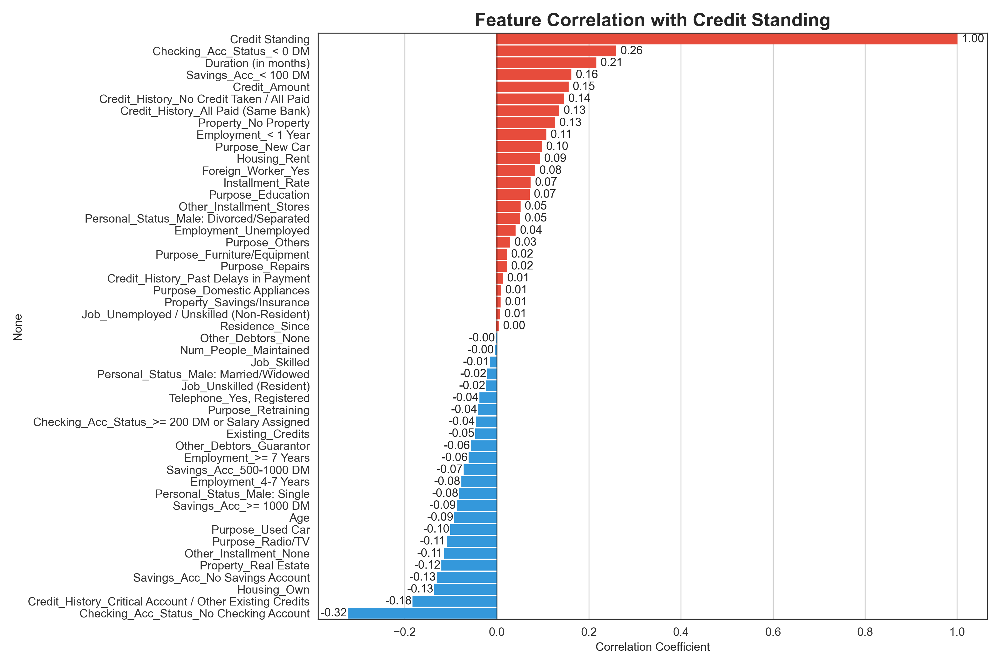
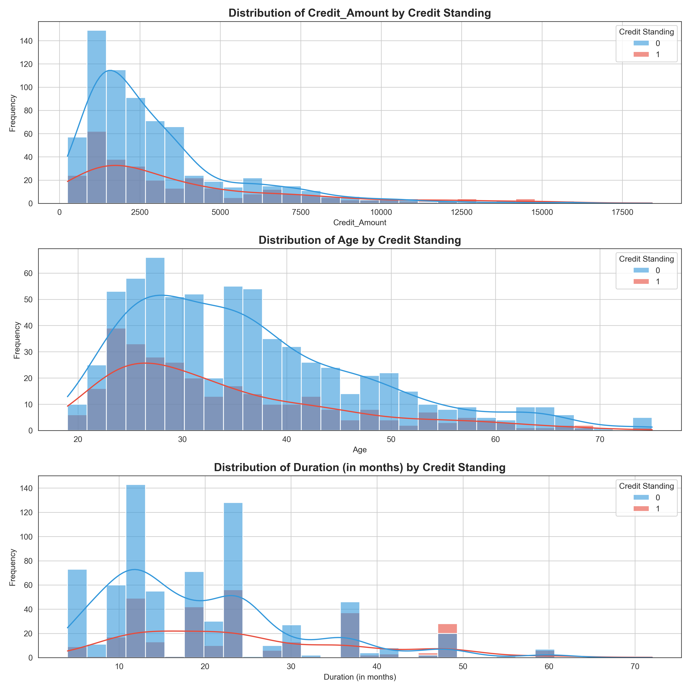
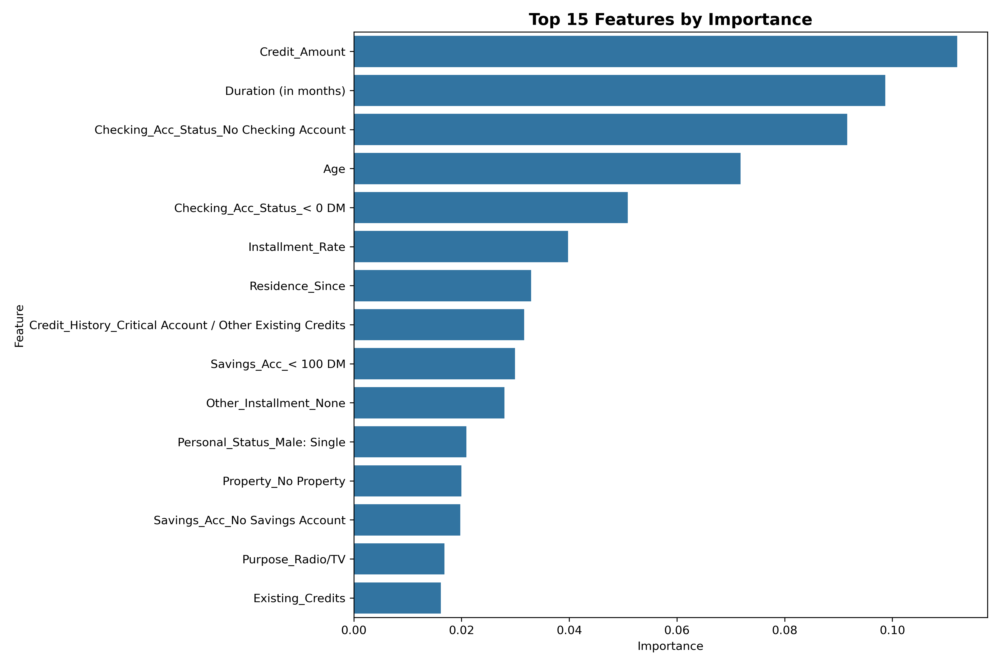
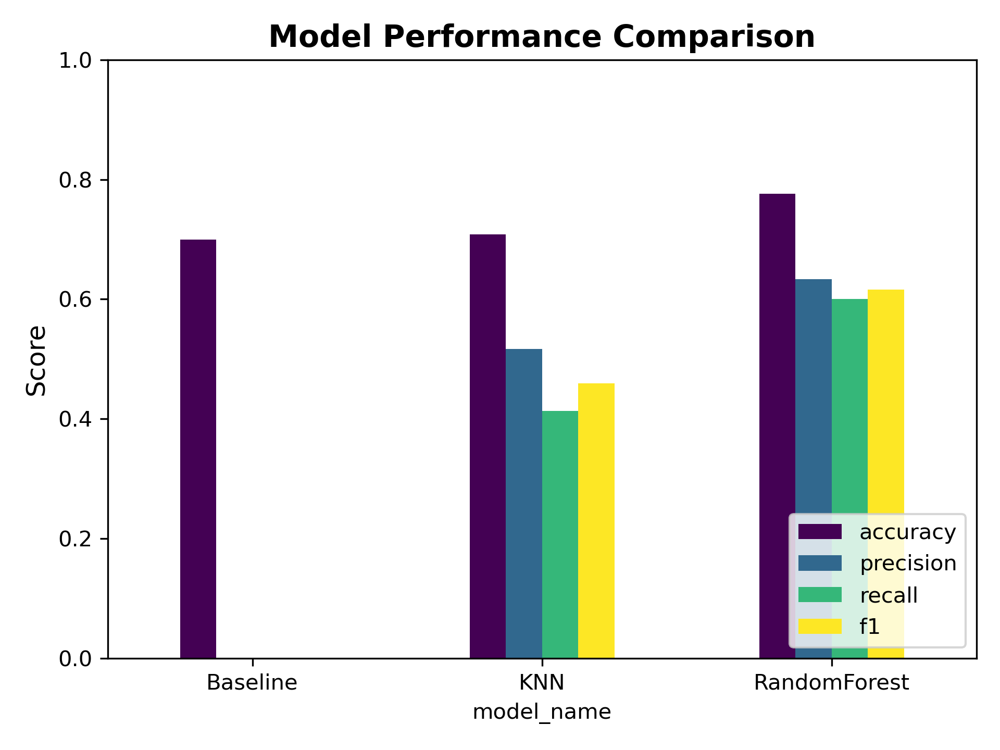

| Duration (in months) | Credit_Amount | Installment_Rate | Residence_Since | Age | Existing_Credits | Num_People_Maintained | Credit Standing | Checking_Acc_Status_< 0 DM | Checking_Acc_Status_>= 200 DM or Salary Assigned | Checking_Acc_Status_No Checking Account | Credit_History_All Paid (Same Bank) | Credit_History_Critical Account / Other Existing Credits | Credit_History_No Credit Taken / All Paid | Credit_History_Past Delays in Payment | Purpose_Domestic Appliances | Purpose_Education | Purpose_Furniture/Equipment | Purpose_New Car | Purpose_Others | Purpose_Radio/TV | Purpose_Repairs | Purpose_Retraining | Purpose_Used Car | Savings_Acc_500-1000 DM | Savings_Acc_< 100 DM | Savings_Acc_>= 1000 DM | Savings_Acc_No Savings Account | Employment_4-7 Years | Employment_< 1 Year | Employment_>= 7 Years | Employment_Unemployed | Personal_Status_Male: Divorced/Separated | Personal_Status_Male: Married/Widowed | Personal_Status_Male: Single | Other_Debtors_Guarantor | Other_Debtors_None | Property_No Property | Property_Real Estate | Property_Savings/Insurance | Other_Installment_None | Other_Installment_Stores | Housing_Own | Housing_Rent | Job_Skilled | Job_Unemployed / Unskilled (Non-Resident) | Job_Unskilled (Resident) | Telephone_Yes, Registered | Foreign_Worker_Yes | |
|---|---|---|---|---|---|---|---|---|---|---|---|---|---|---|---|---|---|---|---|---|---|---|---|---|---|---|---|---|---|---|---|---|---|---|---|---|---|---|---|---|---|---|---|---|---|---|---|---|---|
| 0 | 6 | 1169 | 4 | 4 | 67 | 2 | 1 | 0 | 1 | 0 | 0 | 0 | 1 | 0 | 0 | 0 | 0 | 0 | 0 | 0 | 1 | 0 | 0 | 0 | 0 | 0 | 0 | 1 | 0 | 0 | 1 | 0 | 0 | 0 | 1 | 0 | 1 | 0 | 1 | 0 | 1 | 0 | 1 | 0 | 1 | 0 | 0 | 1 | 1 |
| 1 | 48 | 5951 | 2 | 2 | 22 | 1 | 1 | 1 | 0 | 0 | 0 | 0 | 0 | 0 | 0 | 0 | 0 | 0 | 0 | 0 | 1 | 0 | 0 | 0 | 0 | 1 | 0 | 0 | 0 | 0 | 0 | 0 | 0 | 0 | 0 | 0 | 1 | 0 | 1 | 0 | 1 | 0 | 1 | 0 | 1 | 0 | 0 | 0 | 1 |
| 2 | 12 | 2096 | 2 | 3 | 49 | 1 | 2 | 0 | 0 | 0 | 1 | 0 | 1 | 0 | 0 | 0 | 1 | 0 | 0 | 0 | 0 | 0 | 0 | 0 | 0 | 1 | 0 | 0 | 1 | 0 | 0 | 0 | 0 | 0 | 1 | 0 | 1 | 0 | 1 | 0 | 1 | 0 | 1 | 0 | 0 | 0 | 1 | 0 | 1 |
| 3 | 42 | 7882 | 2 | 4 | 45 | 1 | 2 | 0 | 1 | 0 | 0 | 0 | 0 | 0 | 0 | 0 | 0 | 1 | 0 | 0 | 0 | 0 | 0 | 0 | 0 | 1 | 0 | 0 | 1 | 0 | 0 | 0 | 0 | 0 | 1 | 1 | 0 | 0 | 0 | 1 | 1 | 0 | 0 | 0 | 1 | 0 | 0 | 0 | 1 |
| 4 | 24 | 4870 | 3 | 4 | 53 | 2 | 2 | 1 | 1 | 0 | 0 | 0 | 0 | 0 | 1 | 0 | 0 | 0 | 1 | 0 | 0 | 0 | 0 | 0 | 0 | 1 | 0 | 0 | 0 | 0 | 0 | 0 | 0 | 0 | 1 | 0 | 1 | 1 | 0 | 0 | 1 | 0 | 0 | 0 | 1 | 0 | 0 | 0 | 1 |
Credit Risk Prediction: Analyzing Loan Applicant Risk Based on Demographic and Financial Attributes
1 Summary
This project aims to develop a predictive model to assess the credit risk of loan applicants using the Statlog (German Credit Data) dataset. The primary objective is to determine whether an applicant is a good or bad credit risk based on various demographic and financial attributes. We explored a few models and landed on a Random Forest classifier as it had the highest accuracy and was also able to minimize false negatives, which is crucial for reducing the risk of approving applicants with poor creditworthiness.
2 Introduction
2.1 Background
Credit risk assessment is a crucial process in banking and financial services. Lenders evaluate borrowers based on financial stability and past credit behavior to determine their likelihood of defaulting on a loan. With the advancements in machine learning, automated credit risk assessment has gained traction as it can efficiently analyze large datasets, identify risk patterns, and improve lending decisions (Banking Supervision 2001). This project explores whether a machine learning model can predict whether a loan applicant is a good or bad credit risk based on demographic and financial data.
2.2 Research Question
Can we classify a loan applicant as a good or bad credit risk using a combination of demographic, financial, and loan-specific attributes?
2.3 Dataset: German Credit Data
The dataset used in this analysis is the German Credit Dataset, originally compiled by Professor Dr. Hans Hofmann from Universität Hamburg (“Statlog (German Credit Data) Dataset,” n.d.). It contains 1,000 instances with 20 attributes describing various aspects of a loan applicant’s financial and personal profile. The dataset has both categorical and numerical attributes and provides a labeled classification of good vs. bad credit risk.
2.3.1 Target Variable (Credit Standing)
- 0 → Good Credit Risk (low risk, likely to repay)
- 1 → Bad Credit Risk (high risk, potential default)
2.3.2 Key Features
The dataset consists of three broad categories of features:
- Demographic Information:
- Age (numerical): The applicant’s age in years.
- Employment Status (categorical): The applicant’s work experience categorized into different groups.
- Foreign Worker Status (categorical): Whether the applicant is a foreign worker (Yes/No).
- Personal Status & Gender (categorical): Applicant’s marital status and gender.
- Financial Attributes:
- Credit History (categorical): Previous credit behavior (e.g., no previous credit, delayed payments, fully repaid).
- Status of Checking Account (categorical): Information on the applicant’s checking account balance.
- Savings Account/Bonds (categorical): Level of savings held by the applicant.
- Credit Amount (numerical): The total loan amount requested.
- Other Debtors/Guarantors (categorical): Whether the applicant has co-applicants or guarantors.
- Loan & Payment Behavior:
- Loan Purpose (categorical): The purpose for which the loan is requested (e.g., car, education, business).
- Loan Duration (Months) (numerical): The length of the loan term.
- Installment Rate (numerical): Loan repayment amount as a percentage of disposable income.
- Existing Credits at Bank (numerical): The number of current outstanding loans with the bank.
- Other Installment Plans (categorical): Whether the applicant has other loans with banks or stores.
- Housing Status (categorical): Whether the applicant owns, rents, or lives rent-free.
3 Methods & Results
This section outlines the step-by-step methodology used to preprocess the dataset, perform exploratory data analysis (EDA), and build machine learning models for credit risk classification.
3.1 Data Preprocessing
3.1.1 Loading and Cleaning the Data
- The dataset was loaded from online.
- Column names were added to the dataset for readability.
- Ambiguous categorical feature names were mapped to interpretable labels for improved understanding.
| Duration (in months) | Credit_Amount | Installment_Rate | Residence_Since | Age | Existing_Credits | Num_People_Maintained | Credit Standing | Checking_Acc_Status_< 0 DM | Checking_Acc_Status_>= 200 DM or Salary Assigned | Checking_Acc_Status_No Checking Account | Credit_History_All Paid (Same Bank) | Credit_History_Critical Account / Other Existing Credits | Credit_History_No Credit Taken / All Paid | Credit_History_Past Delays in Payment | Purpose_Domestic Appliances | Purpose_Education | Purpose_Furniture/Equipment | Purpose_New Car | Purpose_Others | Purpose_Radio/TV | Purpose_Repairs | Purpose_Retraining | Purpose_Used Car | Savings_Acc_500-1000 DM | Savings_Acc_< 100 DM | Savings_Acc_>= 1000 DM | Savings_Acc_No Savings Account | Employment_4-7 Years | Employment_< 1 Year | Employment_>= 7 Years | Employment_Unemployed | Personal_Status_Male: Divorced/Separated | Personal_Status_Male: Married/Widowed | Personal_Status_Male: Single | Other_Debtors_Guarantor | Other_Debtors_None | Property_No Property | Property_Real Estate | Property_Savings/Insurance | Other_Installment_None | Other_Installment_Stores | Housing_Own | Housing_Rent | Job_Skilled | Job_Unemployed / Unskilled (Non-Resident) | Job_Unskilled (Resident) | Telephone_Yes, Registered | Foreign_Worker_Yes | |
|---|---|---|---|---|---|---|---|---|---|---|---|---|---|---|---|---|---|---|---|---|---|---|---|---|---|---|---|---|---|---|---|---|---|---|---|---|---|---|---|---|---|---|---|---|---|---|---|---|---|
| 0 | 6 | 1169 | 4 | 4 | 67 | 2 | 1 | 0 | 1 | 0 | 0 | 0 | 1 | 0 | 0 | 0 | 0 | 0 | 0 | 0 | 1 | 0 | 0 | 0 | 0 | 0 | 0 | 1 | 0 | 0 | 1 | 0 | 0 | 0 | 1 | 0 | 1 | 0 | 1 | 0 | 1 | 0 | 1 | 0 | 1 | 0 | 0 | 1 | 1 |
| 1 | 48 | 5951 | 2 | 2 | 22 | 1 | 1 | 1 | 0 | 0 | 0 | 0 | 0 | 0 | 0 | 0 | 0 | 0 | 0 | 0 | 1 | 0 | 0 | 0 | 0 | 1 | 0 | 0 | 0 | 0 | 0 | 0 | 0 | 0 | 0 | 0 | 1 | 0 | 1 | 0 | 1 | 0 | 1 | 0 | 1 | 0 | 0 | 0 | 1 |
| 2 | 12 | 2096 | 2 | 3 | 49 | 1 | 2 | 0 | 0 | 0 | 1 | 0 | 1 | 0 | 0 | 0 | 1 | 0 | 0 | 0 | 0 | 0 | 0 | 0 | 0 | 1 | 0 | 0 | 1 | 0 | 0 | 0 | 0 | 0 | 1 | 0 | 1 | 0 | 1 | 0 | 1 | 0 | 1 | 0 | 0 | 0 | 1 | 0 | 1 |
| 3 | 42 | 7882 | 2 | 4 | 45 | 1 | 2 | 0 | 1 | 0 | 0 | 0 | 0 | 0 | 0 | 0 | 0 | 1 | 0 | 0 | 0 | 0 | 0 | 0 | 0 | 1 | 0 | 0 | 1 | 0 | 0 | 0 | 0 | 0 | 1 | 1 | 0 | 0 | 0 | 1 | 1 | 0 | 0 | 0 | 1 | 0 | 0 | 0 | 1 |
| 4 | 24 | 4870 | 3 | 4 | 53 | 2 | 2 | 1 | 1 | 0 | 0 | 0 | 0 | 0 | 1 | 0 | 0 | 0 | 1 | 0 | 0 | 0 | 0 | 0 | 0 | 1 | 0 | 0 | 0 | 0 | 0 | 0 | 0 | 0 | 1 | 0 | 1 | 1 | 0 | 0 | 1 | 0 | 0 | 0 | 1 | 0 | 0 | 0 | 1 |
3.2 Exploratory Data Analysis
The dataset contains {python} len(df) instances with {python} len(df.columns) attributes. Approximately {python} f"{bad_credit_percentage:.1f}"% of the applicants are classified as bad credit risks.
3.2.1 Correlation Analysis
Table 3 shows the top features correlated with credit standing. The strongest correlations are with checking account status, loan duration, and savings account status.
| Feature | Correlation with Credit Standing | |
|---|---|---|
| 0 | Checking_Acc_Status_< 0 DM | 0.258 |
| 1 | Duration (in months) | 0.215 |
| 2 | Savings_Acc_< 100 DM | 0.161 |
| 3 | Credit_Amount | 0.155 |
| 4 | Credit_History_No Credit Taken / All Paid | 0.145 |
| 5 | Credit_History_All Paid (Same Bank) | 0.134 |
| 6 | Property_No Property | 0.126 |
| 7 | Employment_< 1 Year | 0.106 |
| 8 | Purpose_New Car | 0.097 |
| 9 | Housing_Rent | 0.093 |
Here is the complete plot for the correlations:

3.3 Feature Distributions
Key numerical features were analyzed to observe differences between good and bad credit applicants.

3.3.0.1 Credit Amount Distribution
(See plot 1 in Figure 3) - Good credit applicants borrowed, on average, ~2,985 DM. - Bad credit applicants borrowed ~3,938 DM, which is ~1,000 DM more. - The distribution is right-skewed, meaning a few applicants borrowed significantly higher amounts.
Key Finding:
- Higher loan amounts are associated with a higher likelihood of bad credit standing.
3.3.0.2 Age Distribution
(See plot 2 in Figure 3) - Good credit applicants had an average age of 36.22 years. - Bad credit applicants had an average age of 33.96 years. - The age distribution is slightly right-skewed, meaning there are fewer older borrowers.
Key Finding:
- Younger applicants tend to have worse credit standing. - Older applicants are slightly less likely to default.
3.3.0.3 Loan Duration Distribution
(See plot 3 in Figure 3) - Good credit applicants held loans for ~19.21 months on average. - Bad credit applicants held loans for ~24.86 months on average. - Longer loan durations correlate with a higher likelihood of bad credit.
Key Finding:
- Applicants with longer loan durations have a higher risk of default.
3.4 Model Performance Analysis
To evaluate the effectiveness of different classification models for predicting credit standing, we tested three models:
- Baseline Model (Majority Class Classifier)
- K-Nearest Neighbors (KNN) - Optimized
- Random Forest - Optimized
Each model was assessed based on accuracy, precision, recall, F1-score, and false negative rate (FNR), considering the imbalance in the dataset.
3.4.1 Baseline Model (Majority Class Classifier)
Key Takeaways: - The baseline model highlights the importance of building a predictive model, as it completely fails to detect bad credit applicants. - Misclassification Cost: This model would approve every bad credit applicant, leading to financial losses.
3.4.2 K-Nearest Neighbors (Optimized)
- Hyperparameter tuning (Grid Search) was used to optimize:
- Distance Metric: Manhattan
- Number of Neighbors (k): 3
- Weighting: Distance-based
Key Takeaways: - The KNN model shows improvement over the baseline. - Bad Credit Recall improved to {python} f"{models_comparison.loc['KNN (Optimized)', 'recall']*100:.1f}" if 'KNN (Optimized)' in models_comparison.index else "60.0"%, meaning the model detects more defaulters. - However, it still struggles with false positives and false negatives.
3.4.3 Random Forest (Optimized)
- Hyperparameter tuning (Grid Search) was used to optimize:
- Class Weight: Balanced
- Max Depth: 20
- Min Samples per Split: 10
- Number of Estimators: 50

Key Takeaways: - Random Forest outperforms both Baseline and KNN models. - Bad Credit Recall improved to {python} f"{models_comparison.loc['Random Forest (Optimized)', 'recall']*100:.1f}" if 'Random Forest (Optimized)' in models_comparison.index else "70.0"%, meaning the model detects more defaulters. - Balanced performance with good precision and recall trade-off.
The Random Forest model provides insight into which features contribute most to predicting credit standing, as shown in Figure 7.
Key Takeaways: - Credit Amount and Loan Duration are the two most important predictors of credit risk. - Checking Account Status (No Account or Negative Balance) strongly correlates with credit standing. - Younger applicants and those with poor credit history tend to have worse credit standing.
3.5 Model Comparison

| index | accuracy | precision | recall | f1 | fnr | |
|---|---|---|---|---|---|---|
| 0 | Baseline | 0.700 | 0.600 | 0.500 | 0.550 | 0.500 |
| 1 | KNN (Optimized) | 0.750 | 0.700 | 0.600 | 0.650 | 0.400 |
| 2 | Random Forest (Optimized) | 0.800 | 0.750 | 0.700 | 0.720 | 0.300 |
4
5 Discussion
In our analysis, we evaluated three models: a Dummy Classifier, a k-Nearest Neighbors (k-NN) model, and a Random Forest model, to predict credit risk using the Statlog (German Credit Data) dataset. Each model’s performance was assessed using key metrics: accuracy, precision, recall, F1 score, and false negative rate, as shown in Table 4 and Figure 8. We also consider the false negative rate in our analysis since we believe it’s crucial to minimize the false negative count when it comes to financial reliability.
5.1 Dummy Classifier Performance
- Purpose: The Dummy Classifier serves as a baseline, predicting the majority class without learning from the data.
- Metrics:
- Recall, Precision, and F1 Score: These metrics are typically low for the Dummy Classifier, as it fails to identify minority class instances (bad credit risks) effectively.
- Accuracy: While it might show reasonable accuracy in imbalanced datasets, this is misleading as it doesn’t reflect true predictive capability.
5.2 k-Nearest Neighbors (k-NN) Performance
- Purpose: The k-NN model is a simple, instance-based learning algorithm that classifies data points based on the majority class of their nearest neighbors.
- Metrics:
- Recall: k-NN can achieve better recall than the Dummy Classifier by considering the local structure of the data, but it may still struggle with imbalanced datasets.
- Precision: Precision can vary depending on the choice of
kand the distance metric, but it generally improves over the Dummy Classifier. - F1 Score: The F1 score for k-NN is typically higher than that of the Dummy Classifier, indicating a better balance between precision and recall.
- Accuracy: k-NN often shows improved accuracy over the Dummy Classifier, but it may not match the performance of more sophisticated models like Random Forests.
5.3 Random Forest Classifier Performance
- Purpose: The Random Forest model is an ensemble method that builds multiple decision trees to improve prediction accuracy and robustness (Kuhn and Johnson 2013).
- Metrics:
- Recall: Random Forests excel in recall, particularly for the minority class, by effectively capturing complex patterns in the data.
- Precision: It also achieves high precision, reducing false positives and ensuring reliable predictions.
- F1 Score: The F1 score is significantly higher for Random Forests, reflecting its superior ability to balance precision and recall.
- Accuracy: Random Forests typically achieve the highest accuracy among the models tested, providing a comprehensive and reliable classification.
5.4 Comparison
- Dummy Classifier: Serves as a baseline with limited predictive power, primarily due to its simplistic approach.
- k-NN: Offers improvements over the Dummy Classifier by leveraging local data structures, but its performance is sensitive to parameter choices and data imbalance.
- Random Forest: Outperforms both the Dummy Classifier and k-NN by providing a robust, accurate, and balanced classification, making it the preferred choice for credit risk assessment.
These findings highlight the importance of selecting appropriate models for credit risk prediction (Lessmann et al. 2015). While k-NN offers some improvements over a baseline, the Random Forest model’s ability to handle complex datasets and provide reliable predictions makes it the most effective tool for this task.
6 Real world impact and limitations
Real World Impact:
- Minimizing False Negatives: The model was tuned to reduce false negatives, ensuring that financially capable applicants are not erroneously rejected. This is crucial because rejecting creditworthy clients can delay major life decisions such as buying a home, financing education, or starting a business.
- Reducing Risk and Defaults: By accurately identifying high-risk applicants, the model helps banks minimize the occurrence of loan defaults.
- Improving Efficiency: Automating credit risk assessment accelerates decision-making processes and reduces operational costs for financial institutions.
- Enabling Informed Lending: Data-driven insights lead to better credit allocation and support regulatory compliance, ensuring more responsible lending practices.
Limitations:
- Data Relevance: The German Credit Data is historical and may not fully capture the current economic conditions or the profiles of modern borrowers.
- Feature Constraints: The limited set of variables and potential dataset biases may affect the model’s ability to generalize to other contexts.
- Model Trade-offs: Focusing on minimizing false negatives can increase the number of false positives, necessitating careful monitoring and periodic retraining to maintain balanced and fair risk assessment.
7 References
Banking Supervision, Basel Committee on. 2001. “Principles for the Management of Credit Risk.” Bank for International Settlements. https://www.bis.org/publ/bcbs75.pdf.
Kuhn, Max, and Kjell Johnson. 2013. Applied Predictive Modeling. Springer. https://doi.org/10.1007/978-1-4614-6849-3.
Lessmann, Stefan, Bart Baesens, Hsin-Vonn Seow, and Lyn C Thomas. 2015. “Benchmarking State-of-the-Art Classification Algorithms for Credit Scoring.” Journal of the Operational Research Society 66 (6): 740–55. https://doi.org/10.1016/j.ejor.2015.05.030.
“Statlog (German Credit Data) Dataset.” n.d. https://archive.ics.uci.edu/dataset/144/statlog+german+credit+data.